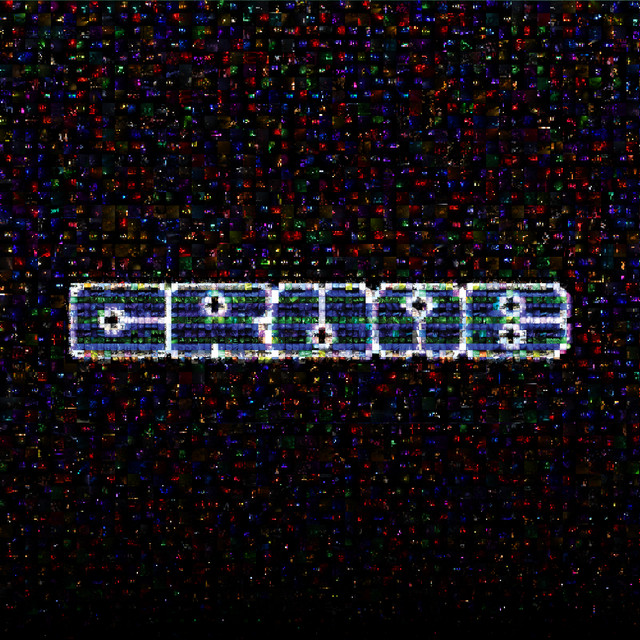
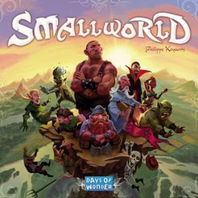
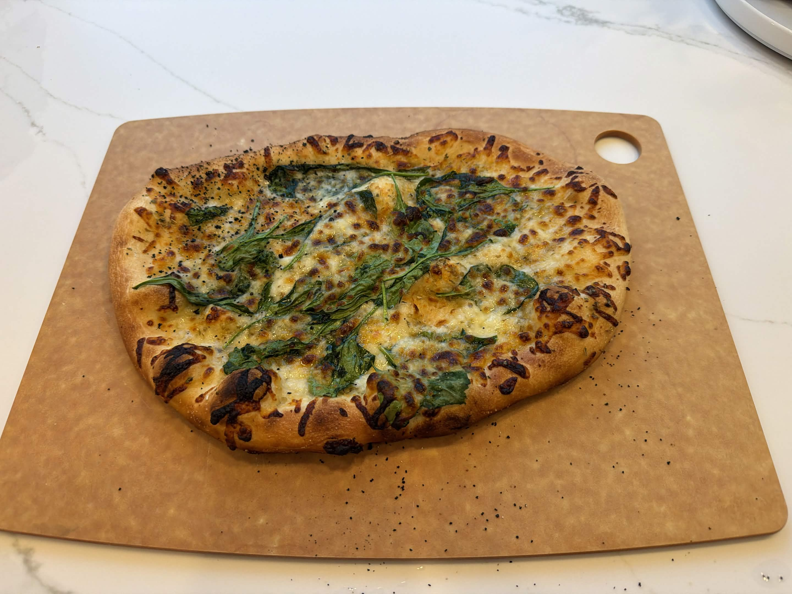

Agentic COBOL Migration
Python agents that migrate COBOL-era APIs and legacy data into an event-sourced ledger, plus validation agents that check the migrated output against TLA+/TLC specs and Python checks before it can be trusted.
Hi I'm Alex! I'm a Cornell CS Master's student graduating in December 2026. I build agentic AI systems and the data infrastructure underneath them, from migration agents and low-latency streaming pipelines at Fidelity to a RAG backend for clinicians at Cornell's AI Innovation Lab. In my free time I like to make pizza, go hiking, and play video/board games. Right now I'm messing around in godot for the first time!
Python agents that migrate COBOL-era APIs and legacy data into an event-sourced ledger, plus validation agents that check the migrated output against TLA+/TLC specs and Python checks before it can be trusted.
A Java Kafka producer over Aeron with async, fault-tolerant delivery, and pipelines streaming a sub-3ms deterministic brokerage platform's state machine output into SingleStore.
The RAG layer for a multi-agent tool that helps clinicians find research collaborators: PDF and PubMed ingestion, S3 storage, and vector search that returns cited faculty matches.
Airflow-native task-runtime anomaly detection with DAG-file config, custom detectors, four built-in algorithms, task-level observability, and CI tests.
An execution strategy that beat TWAP on INTC, MSFT, AMZN, GOOG, and held-out AAPL using order-book imbalance, spread, and timing signals on tick-level data.


